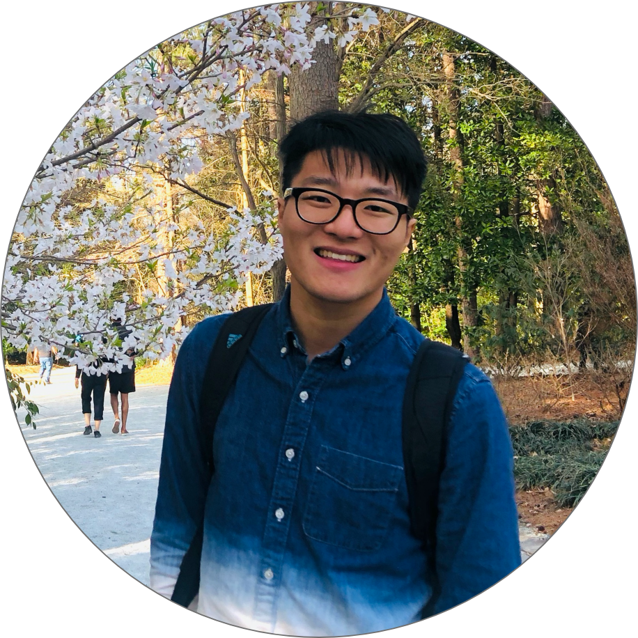

I have highlighted some points below
Firstly, don't wish them twice. You would obviously wish the panel while entering the room. It's unnecessary
for you to do it again while you introduce yourself.
Also, remember that if the interviewer has wished you by your name, don't repeat it by starting your
introduction with your name again. But if you wish to let them know your complete name, you can do so.
Ensuring that you take care of these two points showcases that you are not merely parroting a memorized
answer.
Don’t let your introduction be too short. Validate your points and elaborate on them. But remember, lengthy
answers are also not the right way. So, follow the rule of 60-90 seconds.
Your answer to this question should help you project yourself in different dimensions. Be versatile and
showcase them the different skills you possess. Highlight your achievements in streams other than your
academics as well. Let them choose what they need from what you have got to offer.
Speak about your academic achievements because that is the primary criteria for why you are in the interview
but elaborate on it only if you're good.
Give them a brief account of the extracurricular activities you've done at school and college. Make sure you
give the right mix of everything. Ensure that you are mentioning those activities that are directly relevant
to the job role you are interviewing for.
The interviewers are always keen on the issues that you're interested most in. Therefore, when you say you
love something, chances are that they'll ask a few follow-up questions on the topic. In this case, you have
a good chance of tempting the interviewers into asking favorable questions.